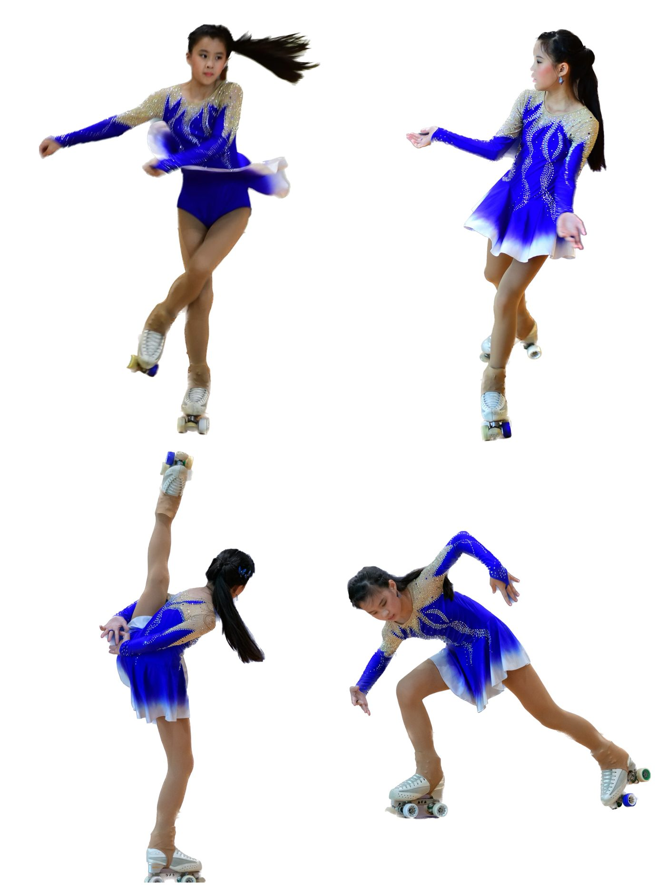
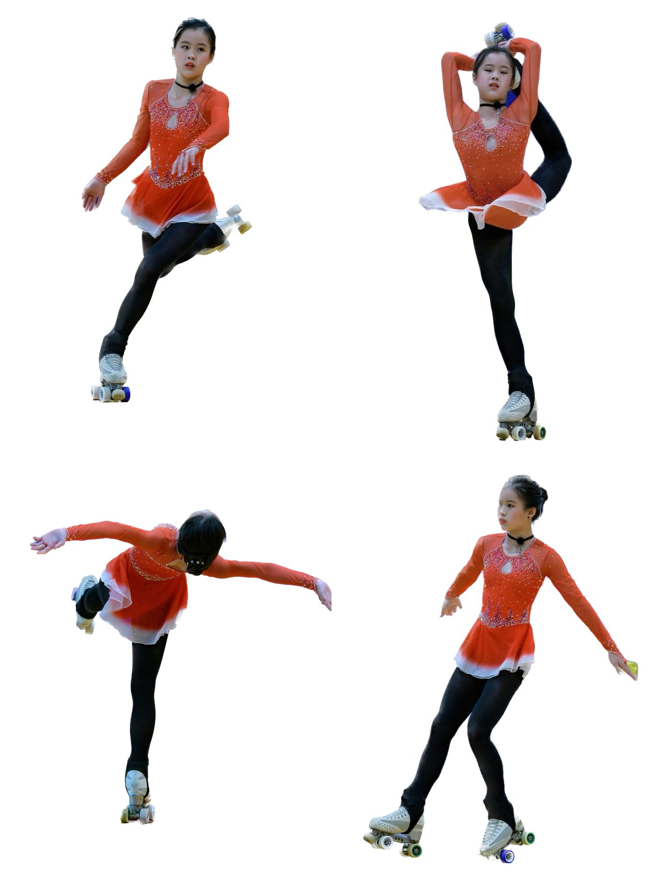

01我的故事
花式滑輪溜冰界的漂亮寶貝
黃敏琍15歲，熱愛花式滑輪溜冰，小學一年級開始成為學生選手，每年固定參加台北市盃及全國盃花式溜冰錦標賽，至今累積四十多場賽事，目前國三，國小階段在個人自由型項目曾拿下四次中正盃全國比賽冠軍(台灣單項運動最高層級比賽)，升上國中組維持在個人自由型領域的常勝軍，並順利拿下全中運亞軍。
敏琍另外也嘗試直排花式，2022年初次跨界就拿下全國中正盃直排花式第二名的好成績，並在2024年以13歲之齡選上國家代表隊個人直排花式項目，前往義大利里米尼參加世界盃花式溜冰錦標賽，在13位國際選手中拿下第八名，為亞洲選手最佳成績。
2025年敏琍再次選上國手，而且是直排花式及自由型二個個人項目。在韓國堤川舉辦的亞洲盃滑輪溜冰錦標賽中榮獲一銀一銅，及中國北京舉辦的世錦賽獲得第十一名，後勢可期。

